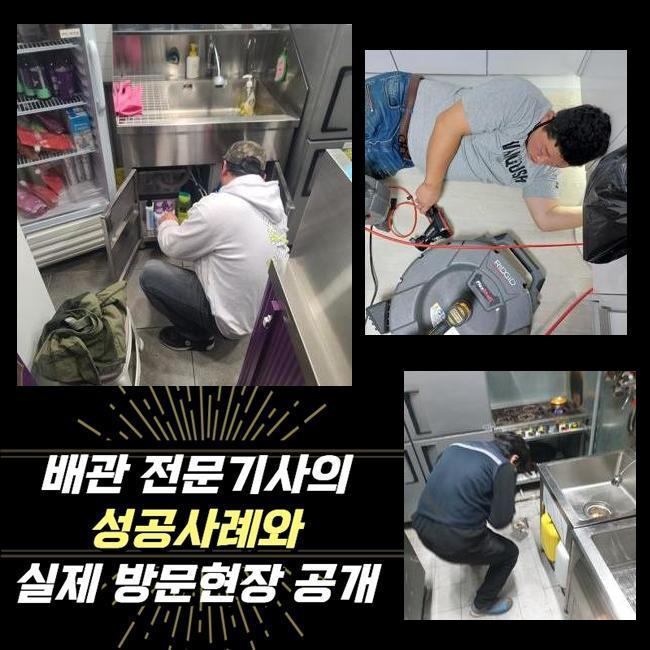
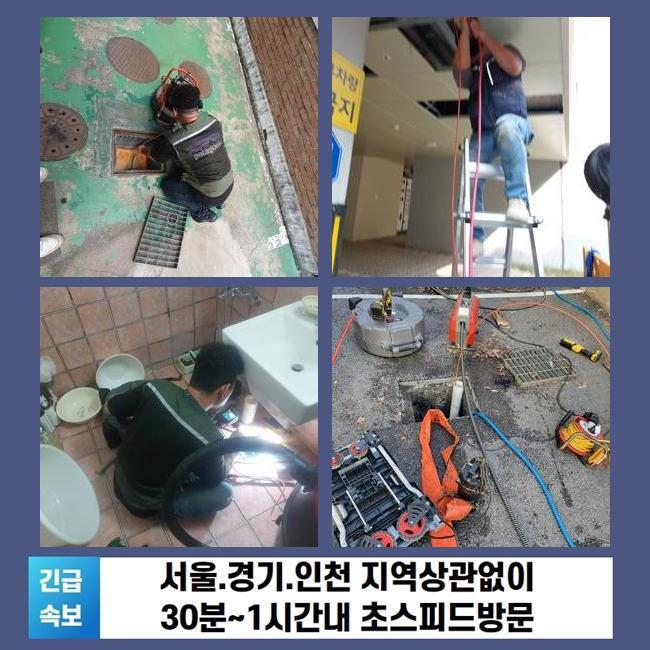
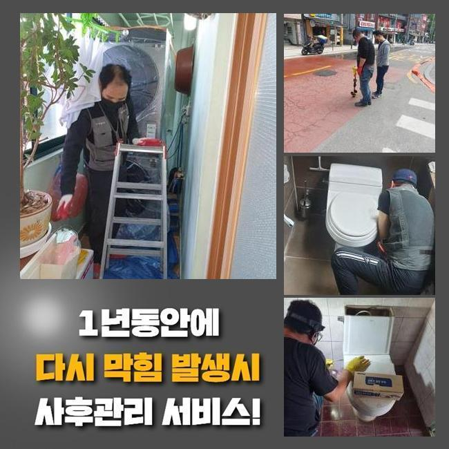
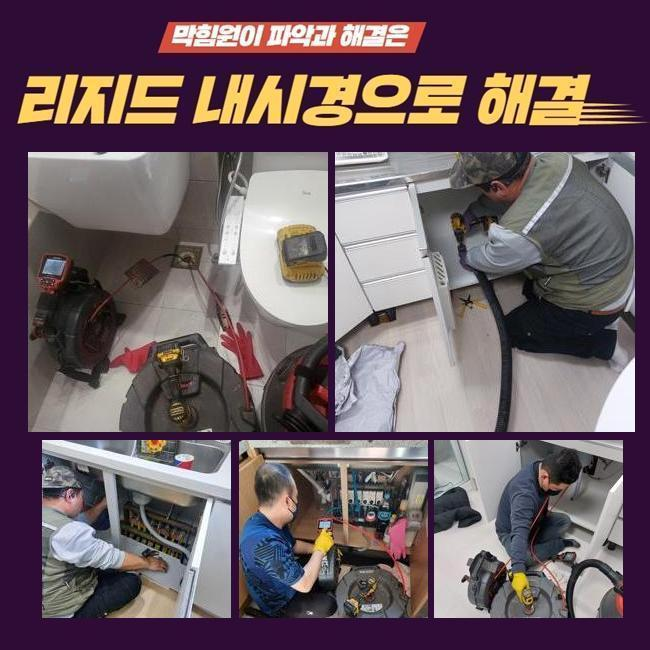
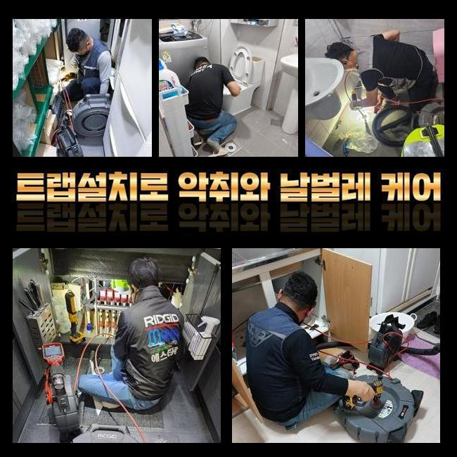
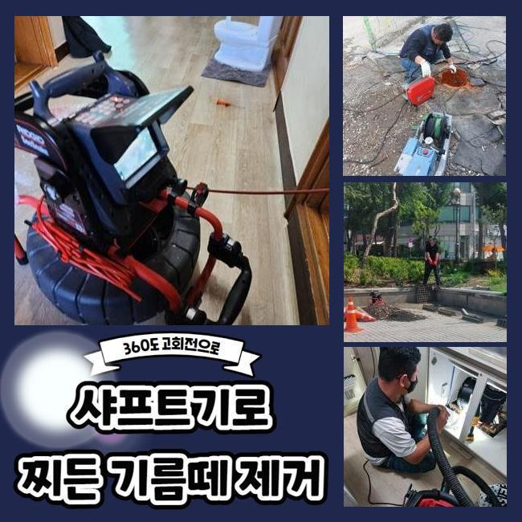
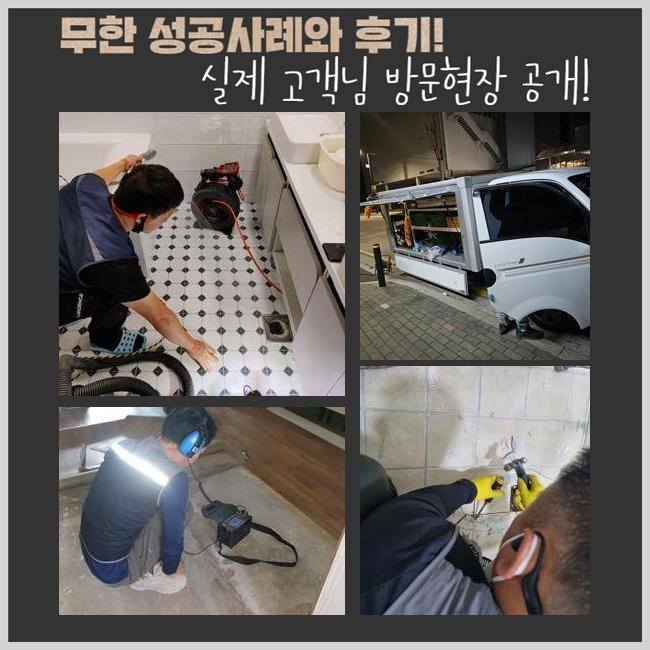

🏠 강동구 고덕동싱크대배수관막힘 암사동 배수로뚫기 배관뚫는업체
용인 싱크대막힘 전문 시공 후기

📋 작업 개요
- 위치: 용인
- 서비스 유형: 싱크대막힘, 하수구막힘, 배관막힘, 역류해결, 뚫는업체, 배관청소, 고압세척
- 작업 일시: 2025. 4. 1. 12:08
- 업체명: 하수구수사대 (010-5615-2118)
🔍 문제 상황
강동구 고덕동싱크대배수관막힘 암사동 배수로뚫기 배관뚫는업체
이번에는 한 건물에서 하수관의 역행이 나타났다는 것을 듣고 빠르게 손봐드리려고 작업장소에 장비를 챙겨 갔습니다
단독주택이 아닌 경우라면 각 공간마다 장착된 파이프들이 결국 모이게 되는 설비 구조를 갖춘 상황이 많은 편입니다
한 두곳의 포인트에서 막힘이 도래하게 되면 이 고장이 확산돼서 많은 사용자분들이 곤란함을 느낄 때도 많습니다
이번 시공을 했던 곳은 여러 장소들이 모인 상가건물이었는데 불현듯 찾아온 하수구 곤란으로 영업을 할 수 없어서 금전적인 부담까지 엎친데 덮친 격이었습니다
이렇게 거대한 건물에서 하수구 곤란이 자꾸만 생겨나면 세입자나 건물주 모두에게 어려움을 부풀릴 수 있다보니 굼뜨게 움직이지 않고 현장에 찾아가고 있습니다
도착 후에는 손상이 두드러지는 곳부터 우선 방문하여 통수 테스트를 우선 시행해봅니다
수돗물의 배수테스트의 의의는 물을 인위적으로 한꺼번에 방출시켜서 배수구 구멍으로 쏟아부은 물이 막히지 않고 흘러가는지 검사하여 기능을 확인합니다
수돗물의 액체가 나아가는 속도가 낮아진데다 심지어 좀처럼 내려가지 않는 순간이 분명히 존재한다는 사실을 몸소 깨닫게 되었습니다
종합적인 막힘의 문제들이 벌어지고 있는 현황을 고려하면 내면에 생각보다 많은 오염원인들이 자리하고 있을 가능성이 높다는 뜻입니다

🔎 원인 분석
💡 전문가 진단: 정밀 진단 장비를 사용하여 슬러지의 고착 여부를 판명하고 타격/세척 작업을 실시했습니다.
배관 속에 켜켜이 쌓여왔을 오물들을 다 소멸시키는데 실패한다면 기하급수적으로 피해가 확대될 수 있는 부분이라 시간을 최대한 단축시키려 노력했습니다
건물의 하수장애를 낳는 문제들은 관로 여기저기에 붙은 오물일 때가 많으니 전부 확인해서 정화를 해줘야 제기능으로 돌아갑니다
고객님들이 평범하게 물을 쓰실 때마다 어느정도의 찌꺼기들은 형성되는데 배수구에 휩쓸려서 바깥으로 나가는 동안에 한 파트에 접착돼서 통수를 저해하게 됩니다
하수관 안으로 쓰레기를 던져넣는 것이 아닐지라도 소량 내포된 석회 물질이라거나 미네랄이 딱딱하게 굳곤 합니다
관로 안을 살펴보니까 유분막과 머리카락처럼 견고한 성질의 물에 안 녹는 것들이 한껏 엉켜있었습니다
자기들끼리 엉겨붙다가 짱돌같은 고체로 변모한다면 수습이 힘든 골칫거리가 됩니다
통로를 꽉 채운다면 밑에 고여있던 오염수의 역류도 뒷수습을 해야만 할 해프닝이 생기기도 합니다
배관 내부의 물에 담겨있다면 더 빠르게 썩어나갈 환경을 조성하는 것과 같은데 축축하고 습한 냄새가 같이 올라와서 고정적인 집냄새가 되어버립니다
보통 하수가 이동하는 배관은 습도가 매우 높게 유지되니 위생도 더 나빠지는데다 악취까지 실내에 풍기게 됩니다
침전물이 부착된 곳이 여러 곳일 때가 있으니 전체적인 점검이 필수입니다
짧은 하수구 구간상의 오류라면 석션기의 작동을 통해서도 쉽게 막힌 하수를 뚫어낼 수 있습니다

🔧 작업 과정
틈새가 많은 모양새이거나 배관들이 여러개 모여있을 땐 물살이 방해받는 구간들이 은근 많다고 느껴질 것입니다
배관이 가진 속성이나 이물질의 견고함과 크기를 살펴보는 안목이 요구됩니다
아무리 물을 쏘아대더라도 물길이 도로 나오지 못하면 과하게 커져서 빈틈이 없다거나 강한 화석처럼 변성됐을 겁니다
이와 같은 쉽지않은 하수도 막힘을 부드럽게 연화시키려면 본질적인 원인을 발견하여 덜어내야 합니다
이물질의 부피와 같은 현황을 객관적으로 분석해야 작업 툴도 결정할 수 있습니다
배관에 넣는 내시경은 깊고 어둑해서 안보이는 배관을 모니터로 내부를 비춰주는 활용도가 좋은 관측장치로 오염원을 어떻게 처리하면 좋을지를 비교적 자세히 알 수있게 해줍니다
내시경 기기를 작업 사이 배치해서 조사를 해보면 작업이 놓치는 구간은 없는지 사이사이 점검을 하게 되니 시공 퀄리티가 올라갑니다
본단계에 착수하기 전에 배관의 상태를 가볍게 확인할 때와 앞선 작업이 깔끔히 끝났는지 확실히 알아보려는 목적으로 내시경을 돌립니다
유력한 지점들을 다 체크해보니 메인관로를 포함하여 저 아래의 심부까지도 기름때들이 딱 달라붙어있는 것을 목격하게 됐습니다
실내는 진동의 힘을 소지한 단단한 와이어 스프링이나 회전력 좋은 샤프트로 오물을 자잘하게 절단시켜서 문제를 처단할 수 있는 부분이지만요
규모가 큰 옥외 설비의 긴 관로를 따라서 오염원이 자리를 잡았으면 극적인 개선을 보기는 다소 힘들 수 있습니다
넓은 면적이에 비례해서 누적된 쌓이는 양도 많을 수 밖에 없으니 석션에 달린 집수통의 용량으로는 턱도 없을 수 있습니다
커다란 배수로를 청소할 때는 고압의 물줄기를 분사하는 고압수를 통한 청소법을 택하는 방식이 바람직할 수 있습니다
작업을 해줄 하수 설비의 들어가기 쉬운 크기의 노즐을 끼워서 이물질을 타격하는 방법이며 이미 단단해진 고형물이라도 분해를 해줍니다
다년간 유지되어 온 배관설비는 노후됐다면 더 약해지므로 작업의 올바른 방식에 대해 여러 단서를 보고 정하고 작업해요
하수구를 타격하기 전에 배관 안의 강직도에 대해서도 사전검진을 충분히 거친 후에 하수구 세척에 뛰어듭니다
구역마다 세기를 바꿔가면서 연쇄적으로 배관의 청소를 담당해드리면서 답답하게 빈 틈도 없이 막아서고 있었던 침전물들을 남김 없이 제거하는 데 성공했습니다


✅ 작업 완료
둥둥 떠다니던 소규모의 찌꺼기도 잔여량이 없는지를 검토하면 본연의 하수구 기능을 원상복구 시켰다고 말씀드려도 됩니다
하수가 잘 방출되는지 통수테스트를 거쳐보고 관리법에 대한 질문을 하시더라도 답해드리고 사용법도 알려드립니다
겉면에 찌꺼기가 없는지 확인하고 부실함 없이 시공이 완수되었나 더블체크를 놓치지 않습니다
여러 기구들을 빠지지 않고 쓰면서 높은 만족도를 얻으시도록 하수관의 고장에 대해서 능숙하게 해결해 나갑니다
고객님 댁의 하수에 대해서 필요하신 게 있으시다면 언제든 저희 문은 열려있습니다




⚠️ 주방 싱크대 배관 막힘 예방 수칙
- ✅ 기름기가 묻은 식기나 프라이팬은 설거지 전 키친타올로 반드시 기름때를 닦아내세요.
- ✅ 주기적으로 싱크대 개수대에 뜨거운 물을 가득 받아 한 번에 내려 배관 내부 기름을 씻어내세요.
- ✅ 배수구 거름망을 미세한 필터로 사용하시고 음식물 찌꺼기가 틈으로 새어 들지 않게 관리하세요.
- ✅ 베이킹소다와 식초를 뜨거운 물과 함께 일주일에 한 번씩 부어주면 배관 살균과 막힘 예방에 좋습니다.
💡 핵심 정리
- 확실한 장비 작업(내시경 점검 및 샤프트 스케일링)으로 원인을 뿌리 뽑습니다.
- 작업 후 1년 이내에 동일한 부위 재발 시 100% 무상 A/S 서비스를 보장합니다.
- 서울 · 경기 · 인천 전 지역에 24시간 언제든 긴급 출동할 수 있도록 항시 대기 중입니다.
❓ 자주 묻는 질문 (FAQ)
🚨 용인 싱크대막힘 문제로 고민이신가요?
정확한 원인 진단과 확실한 시공으로 재발 없는 해결을 약속드립니다.
24시간 긴급 출동 | 서울 · 경기 · 인천 전지역 | 1년 내 재발 시 무상 A/S